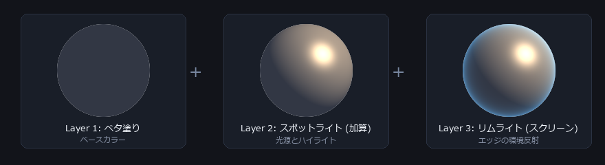
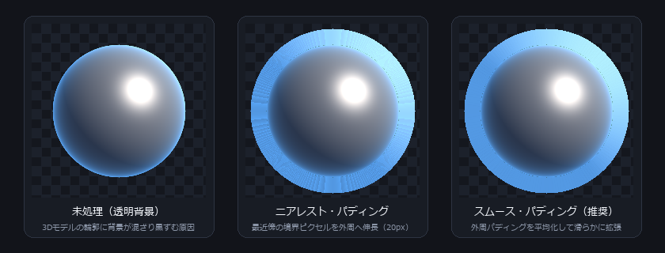

Matcap Maker 機能・操作リファレンスマニュアル Matcap Maker Feature & Operations Reference Manual
本ドキュメントは、3Dモデリングおよびゲームエンジン向けマテリアルキャプチャ（Matcap）テクスチャ作成ツール「Matcap Maker」の機能仕様、UI操作系、レンダリングパイプライン、ならびに出力処理の技術仕様を体系的に解説した公式リファレンスです。 This document is the official technical reference manual systematically detailing the functional specifications, UI operation system, rendering pipeline, and export processing of "Matcap Maker" — an authoring tool for Material Capture (Matcap) textures tailored for 3D modeling and real-time game engines.
1. クイックスタート 1. Quick Start Quick Start
Matcap Maker は、3D モデルの法線（面の傾き）に応じて陰影や反射を表現する「マットキャップ（Matcap）テクスチャ」を直感的なレイヤー操作で作成できるオーサリングツールです。複雑な 3D ライティング設定を行わなくても、球体上にライトや色を配置するだけで、ゲームエンジンや DCC ツールですぐに使えるテクスチャを書き出せます。
Matcap Maker is an authoring tool designed to create "Matcap (Material Capture) textures" — which render shading, reflections, and highlights based on 3D surface normals — through an intuitive layer-based workflow. Without setting up complex 3D lighting scenes, simply arranging lights and colors over a sphere lets you generate production-ready textures for DCC tools and game engines.
球体の見え方をそのまま 3D モデルに貼り付けるマテリアル手法です。カメラから見た面の傾き（法線ベクトル）をもとにテクスチャの該当ピクセルを参照するため、リアルタイムの光源計算を必要とせず、極めて軽量かつ狙い通りのリッチな質感（金属光沢、プラスチック、肌、トゥーン調など）を表現できます。
Matcap is a shading technique where a pre-rendered or authored sphere's surface is mapped directly onto a 3D model. By sampling pixels using view-space surface normal coordinates, it completely bypasses expensive real-time light calculations while achieving lightweight, stylistically controllable materials such as brushed metal, glossy plastics, stylized skin, or cel-shaded toon looks.
最初のマットキャップを作る 3 ステップ 3 Steps to Your First Matcap
起動画面またはメニューの「ファイル」→「プリセットから新規作成」から、「金属」「プラスチック」「肌」「トゥーン」などのベースを選びます。空のプロジェクトから始めることも可能です。
Select a starter base such as "Metal", "Plastic", "Skin", or "Toon" from the launch screen or menu bar "File" → "New from Preset". You can also start from an empty project.
中央のビューポートに表示された球体上の白いドットをドラッグして光源の位置を動かします。右側のインスペクターで色や強度、ぼかし具合を思い通りに調整します。
Drag the white handle dot directly on the sphere in the central viewport to move the light source. Use the right inspector panel to refine colors, intensities, and falloff curves.
画面右上の「エクスポート」ボタン（または Ctrl+Shift+E）を押し、解像度（1024 / 2048 等）を選んで保存します。自動でエッジパディングが付与され、モデルに貼った際の輪郭の黒ずみが防止されます。
Click the "Export" button in the upper right (or press Ctrl+Shift+E), choose your desired resolution (1024 / 2048 etc.), and save. Radial edge padding is automatically synthesized to prevent seam artifacts on 3D silhouettes.
Matcap Maker には、Windows 用ネイティブアプリ（デスクトップ版）のほか、ブラウザ上でインストール不要で即座に動作する Web版 が用意されています。Web版でも同じ WebGL2 レンダリングエンジンが動作し、球体ギズモの直接操作やレイヤー合成、エクスポートなどの基本機能をそのまま利用できます。
Matcap Maker is provided both as a native Windows desktop application (Tauri) and as an instant zero-install Web Edition running directly inside modern browsers. Both editions share the exact same WebGL2 rendering pipeline, direct manipulation gizmos, multi-layer blending, and export engine.
ただし、Web版はブラウザのセキュリティサンドボックス上で動作するため、ローカルファイルシステムへのアクセス、外部プラグインの読み込み、OpenEXR形式の書き出し等に一部制約があります。詳しくは Web版の仕様・制約事項 をご確認ください。
However, because the Web Edition runs within a browser security sandbox, certain constraints apply to local file system access, external GLSL plugins, and OpenEXR export. Please refer to Web Edition Specifications for complete details.
2. 画面構成と基本操作フロー 2. Interface & Basic Workflow Interface
Matcap Maker の画面は、作業効率と視認性を最大化するため、明快な 5 つの領域に分割されています。
The Matcap Maker interface is structured into 5 streamlined zones engineered for maximized authoring productivity and visual clarity.
(スタック順・ソロ・マスク) Layer Panel
(Stack order, Solo, Mask)
(レイヤー / プレビュー / プロジェクト) Inspector
(Layer / Preview / Project)
基本操作サイクル Core Operation Cycle
- レイヤーの追加: Tab キーまたはレイヤーパネル上部の ＋ ボタンを押し、目的のジェネレーター（スポットライト、フレネル、グラデーション等）を追加します。 Add Layer: Press Tab or click the ＋ button in the layer panel to add desired generators (Spotlight, Fresnel, Gradient, etc.).
- ギズモまたはインスペクターで調整: 中央のビューポートでライトの方向やリムの半径を直接ドラッグするか、右パネルの数値スライダーで微調整します。 Adjust via Gizmo or Inspector: Drag the light orientation handle or rim radius directly in the viewport, or fine-tune numeric parameters in the right inspector.
- プレビュー形状の切り替え: 1（球体）、2（平面）、3（ノーマルマップ凹凸板）、4（3Dメッシュ・分割比較）で立体感を多角的に検証します。 Switch Preview Shapes: Toggle shapes via 1 (Sphere), 2 (Flat Disc), 3 (Normal Map Plate), and 4 (3D Mesh with Side-by-Side Compare) to evaluate lighting response across varied geometry.
- エクスポート: Ctrl+Shift+E でエッジパディング設定を指定して書き出します。2回目以降は Ctrl+E でクイックエクスポートが可能です。 Export: Press Ctrl+Shift+E to configure edge dilation and file format. Subsequent exports can be executed instantly with Ctrl+E (Quick Re-export).
メニューバーには Language（日本語表示時）/ 言語（英語表示時）という独立したメニュー項目が用意されています。海外ユーザーでも迷うことなく、ワンクリックで UI の言語を即座に切り替えることができます。
The top menu bar features a dedicated Language (when in Japanese) / 言語 (when in English) item. International users can locate and toggle the application language with a single click at any time without restarting.
トップバーには現在のバージョン（例: v3.0.0）が常時表示されます。起動時に GitHub の公開リポジトリ（version.json）を非同期確認し、新バージョンが存在する場合は鮮やかな緑色のバッジが点滅して更新を知らせます。クリックすると最新のリリースノートとインストーラーに直接アクセスできます。
The active version (e.g. v3.0.0) is persistently displayed in the top bar. On startup, Matcap Maker asynchronously checks version.json on GitHub. When an update is detected, a vivid green notification badge glows to alert you. Clicking it opens the GitHub release page directly.
-
プロジェクトの保存 (Ctrl+S): Chrome や Edge など File System Access API をサポートするブラウザでは、一度保存先を指定することでデスクトップ版と同様の上書き保存が可能です。非対応ブラウザ（Firefox、Safari等）やセキュリティ制限下では、保存操作を実行するたびに
.mcprojファイルがブラウザからダウンロード保存されます。 Project Saving (Ctrl+S): Browsers supporting the File System Access API (Google Chrome, Microsoft Edge) support direct overwrite saving after granting initial permission. On other browsers (Firefox, Safari) or restricted environments, saving downloads a fresh.mcprojfile. -
プロジェクトを開く: メニューの「ファイル」→「開く」ダイアログのほか、エクスプローラー等から
.mcprojファイルをブラウザ画面上に直接ドラッグ＆ドロップすることでもプロジェクトを即座に復元・展開できます。 Opening Projects: In addition to "File" → "Open", you can restore any saved project instantly by dragging and dropping a.mcprojfile directly onto the browser window. -
非対応のデスクトップ連携機能: OS の「最近使ったファイル」履歴、エクスポート完了後の「フォルダで表示（エクスプローラーを開く）」、および
.mcprojファイルのダブルクリック起動（OSファイル関連付け）は、Web版では利用できません。 Desktop-Specific Integration Features: OS "Recent Files" history, "Reveal in Folder" after export, and double-click file associations in Explorer are exclusive to the native desktop edition.
3. レイヤーシステム仕様 3. Layer System Pipeline Layer Pipeline
Matcap Maker のレイヤーは、Photoshop や各種 2D DCC ツールと同様、リストの上にあるレイヤーが前面（前面合成）として評価されます。各レイヤーは専用の FBO（フレームバッファオブジェクト）でオフスクリーン描画され、高度なブレンディングモードによって順次合成されます。
Similar to Photoshop and standard DCC image authoring suites, Matcap Maker evaluates layers from bottom to top: layers higher in the stack composite over underlying layers. Each layer renders into dedicated off-screen Framebuffer Objects (FBOs) and composites down the stack with full precision.

描画モード（12種）の合成特徴と適用指針 12 Blending Modes & Composition Characteristics
| 描画モードBlend Mode | 略称Code | 合成の特徴Mathematical Characteristics | 主な用途Typical Use Cases |
|---|---|---|---|
| 通常Normal | N |
下のレイヤーの上にそのまま重ねます。不透明度に応じて下のレイヤーが覆い隠されます。Standard alpha over. Completely obscures lower layers based on layer opacity. | ベタ塗り、テクスチャ画像の配置Base coat, imported image graphics |
| 加算Add (Linear Dodge) | Add |
下のレイヤーに光を足し合わせて明るく発光させます。黒（#000000）の部分は何も影響を与えません。Adds pixel values directly. Pure black (#000000) contributes zero change. | スポットライトのハイライト、強い発光反射Specular highlights, intense emissive reflections |
| 乗算Multiply | Mul |
下のレイヤーと色を掛け合わせ、常に暗くなります。白（#ffffff）の部分は透明のように変化しません。Multiplies colors, always darkening. Pure white (#ffffff) leaves underlying pixels untouched. | アンビエントオクルージョン、影、汚れ、色付けAmbient occlusion, cast shadows, grime, color tinting |
| スクリーンScreen | Scr |
光を透過して重ねたように全体を明るくします。加算よりも白飛びしにくく、自然な階調を保ちます。Inverts, multiplies, and inverts back. Brightens without clipping to white as aggressively as Add. | やわらかな環境光、白飛びを抑えたリムライトSoft ambient light fills, natural rim lighting |
| 減算Subtract | Sub |
下のレイヤーの明るさから当レイヤーの明るさを差し引いて暗くします。Subtracts active layer values from underlying pixels, darkening towards black. | 特定方向の逆光シャドウ、遮蔽のシミュレートDirectional occlusions, backlight cutoffs |
| 比較（明）Lighten | Lt |
下のレイヤーと比べて、より明るい方のピクセル値をそのまま採用して残します。Compares channel values and selects the brighter pixel. | 明るい成分のみを重ねるハイライトの合成Selectively overlays bright specular points |
| 比較（暗）Darken | Dk |
下のレイヤーと比べて、より暗い方のピクセル値をそのまま採用して残します。Compares channel values and selects the darker pixel. | 暗い成分のみを反映するシェーディングDeep cavity shadows, dark crevices |
| オーバーレイOverlay | Ov |
下のレイヤーの明暗に応じて、明るい部分はより明るく、暗い部分はより暗くコントラストを強めます。Combines Multiply and Screen based on base brightness, boosting midtone contrast. | コントラスト強調、全体の質感テクスチャ付けContrast punch, surface texture overlays |
| ソフトライトSoft Light | SL |
やわらかな拡散光を当てたように、ふんわりと自然にコントラストを高めます。Creates subtle diffuse contrast similar to shining a diffused light source. | 自然な肌色や微細なトーンの馴染ませSubtle skin tones, gradual tone transitions |
| ハードライトHard Light | HL |
強いスポットライトを照射したように、明暗をくっきりと鋭く強調します。Similar to harsh direct spotlighting; stark contrast shifts. | はっきりとした明暗差を持つライト効果Sharp, high-impact key lighting |
| 覆い焼きカラーColor Dodge | CD |
下のレイヤーを明るく飛ばしつつコントラストを極端に高め、強い反射光をシミュレートします。Brightens underlying pixels by decreasing contrast, simulating hot specular reflections. | 金属表面の高輝度スペキュラ反射Metallic gleams, intense anisotropic flares |
| 差の絶対値Difference | Dif |
下のレイヤーとの色の差を抽出し、明暗や色相を反転させたような特殊な色彩を作ります。Subtracts pixel values and takes the absolute value, inverting hues and luminosities. | 特殊効果、反転トーン、サイバーパンク調Inverted solarization, sci-fi cyber aesthetics |
マスクシステム Masking Subsystem
各レイヤーには個別のマスクを設定でき、効果の適用領域をプロシージャルまたは画像で制限できます。
Every layer can be bounded by a dedicated mask, constraining its spatial contribution either procedurally or via bitmap inputs.
- 輪郭（フレネル）マスク: 視線ベクトルと法線の外積に基づくリム領域のみにレイヤーを制限します。 Fresnel / Rim Mask: Restricts layer influence exclusively to grazing silhouette angles based on view-normal dot products.
- ノイズマスク: シンプレックスノイズによってまだら状に効果をクリップします。 Procedural Noise Mask: Clips layer distribution through procedural simplex noise fields for mottled, organic patterns.
- 画像マスク: 外部PNG画像の輝度値またはアルファをマスクとして使用します。 Image Bitmap Mask: Binds luminance or alpha channels from external PNG/JPG textures as masking coefficients.
- 他のレイヤー参照マスク: 直下にある特定のレイヤーの描画結果（アルファ/輝度）をマスク元としてバインドします。 Layer Reference Mask: Binds the rendered output (alpha or luminance) of an underlying layer as a dynamic mask.
4. 組み込みレイヤー全12種 4. 12 Built-in Layer Types Layer Reference
Matcap Maker には、ベース生成から光学現象、テクスチャ合成、最終ポストプロセスに至るまで 12 種類のレイヤーが標準実装されています。
Matcap Maker incorporates 12 native layer generators covering everything from base shading and optical phenomena to texture compositing and post-processing.
均一な単色で球体全体を塗りつぶします。マテリアルのベースカラー（地色）として最背面に配置するのが基本です。
Fills the sphere with a uniform solid color. Serves as the foundational base coat placed at the bottom of the stack.
球面上にハイライトと指向性ライティングを生成します。光の方向、コーン範囲、減衰、楕円比率、回転を制御できます。
Generates directional lighting and specular highlights with controls for direction, cone angle, falloff, ellipse aspect, and rotation.
法線が外側を向く球体の輪郭付近にエッジライトを付与します。パワー指数で鋭さを、バイアスで幅を調整します。
Applies grazing-angle rim lighting along the silhouette. Power adjusts edge sharpness; bias controls falloff threshold.
シンプレックスノイズまたはホワイトノイズをプロシージャル生成します。金属の研磨痕や有機的な凹凸の表現に用います。
Procedural simplex or white noise generator for simulating surface irregularities, brushed metal striations, and micro-bumps.
外部画像（PNG, JPG, WebP）を取り込みます。Ctrl+V でクリップボードの画像を即座に貼り付け可能です。
Imports external textures (PNG, JPG, WebP). Supports instant clipboard bitmap pasting via Ctrl+V.
線形または放射状のカラーグラデーションを生成します。RGB補間のほか、中間色のにごりを防ぐ Oklab 補間に対応。
Renders linear or radial multi-stop color ramps. Supports perceptual Oklab color interpolation to eliminate dirty midtones.
下層までの合成結果に対し、明度・コントラスト・彩度・色相シフトを非破壊で適用する調整レイヤーです。
Non-destructive adjustment layer for modifying brightness, contrast, saturation, and hue shift across underlying passes.
高速コンボリューションフィルタにより、全体の質感をやわらげる（ブラー）または輪郭を強調（シャープ）します。
High-performance convolution filter layer for softening surface textures (Gaussian Blur) or crisping silhouettes (Unsharp Mask).
RGB総合または各チャンネル（R, G, B, 輝度）ごとの入出力カーブをスプライン補間で精密にカーブコントロールします。
Spline-interpolated tone curve grading for Master RGB and individual R, G, B channels and luminance.
下層のグレースケール輝度値をもとに、ユーザー定義の多段階グラデーションカラーへ再マッピングします（トゥーン調等）。
Remaps underlying grayscale luminance values to user-defined multi-step color gradients, ideal for cel-shaded anime looks.
RGB各色の波長ごとの屈折率のズレをシミュレートし、エッジにレンズのプリズム効果を付加します。
Simulates optical wavelength refraction dispersion, producing subtle prism color fringing along sphere silhouettes.
写真フィルムやシネマカメラのような微細な粒子テクスチャを付加し、デジタルの平坦感を解消します。
Injects organic filmic silver-halide grain micro-variations, eliminating banding and sterile CG smoothness.
5. ビューポートと直接操作ギズモ 5. Viewport & Direct Manipulation Gizmos Live WebGL2 Simulation
Matcap Maker の最大の特徴は、3Dビューポート上の球体を直接クリック＆ドラッグして直感的にパラメータを操作できる「スクリーン空間ダイレクトギズモ」です。
A standout hallmark of Matcap Maker is its direct viewport screen-space gizmo system, allowing artists to click and drag directly over the sphere to orient lights and shape specular lobes intuitively.
ギズモの直接操作仕様 Direct Manipulation Gizmo Controls
- 光源方向ハンドル（球上の白いドット）: 左ボタンドラッグで球面上を滑るように光源ベクトルが回転します。Alt キーを押しながらドラッグすると、球の裏側（陰面側）へ光源を回し込めます。 Light Direction Handle (White Sphere Dot): Left-click and drag across the sphere to pivot the light vector. Holding Alt rotates the light into the back hemisphere.
- 回転リング: 楕円形スポットライト選択時に現れる円環をドラッグすることで、ハイライトの長軸方向を回転角度として指定できます。 Rotation Ring: Dragging the circular ring visible when an elliptical spotlight is selected rotates the orientation axis of the specular elongation.
- リムライト調整ハンドル: 外周付近のハンドルをドラッグするとパワー指数（エッジの細さ）、Shift+ドラッグでバイアス（発光の立ち上がり位置）が変化します。 Rim Light Radial Handles: Dragging the outer rim handle adjusts the power exponent (tightness), while Shift+drag modulates the bias threshold.
4種のプレビュー形状とメッシュ「分割比較」モード 4 Preview Shapes & Side-by-Side Mesh Compare Mode
ツールバーまたはショートカットキー 1〜4 により、4 つのプレビューモードを切り替えられます。
Use the viewport toolbar or shortcut keys 1 to 4 to toggle between 4 preview modes:
- 1 球体 (Canonical Sphere):Sphere: 基準となるマットキャップ球体を表示し、ギズモで自在にライティングを調整します。Standard reference matcap sphere with full direct gizmo manipulation.
- 2 平面 (Flat Disc):Flat Disc: 正面を向いた平坦な円盤で、グラデーションやノイズのテクスチャ分布を確認します。Flat circular disc to inspect raw texture distributions and procedural noise.
- 3 法線凹凸 (Normal Map Plate):Normal Map: 細かな法線凹凸パターンが施された板で、光沢やスペキュラの質感を検証します。Procedurally perturbed normal surface to evaluate specular sheen across fine detail.
- 4 3Dメッシュ & 分割比較 (Mesh & Compare):Mesh & Side-by-Side Compare: 外部 3D モデル（OBJ, GLB, FBX - バイナリ/ASCII対応）を読み込み、カメラの回転（オービット）・移動・ズームを行えます。分割比較モードでは、画面左に基準球体、画面右に 3D メッシュが左右並列で同時描画され、マットキャップテクスチャの原画と立体モデル上の陰影をリアルタイムに見比べながらオーサリングできます。Loads custom 3D models (OBJ, GLB, and FBX binary/ASCII) with orbit/pan/zoom camera navigation. In Side-by-Side Compare Mode, the reference sphere is rendered on the left while the orbitable 3D asset is rendered on the right simultaneously, allowing side-by-side verification in real time.
プレビュー分割（Before / After スプリット）モード Before / After Split Swipe Mode
\ キーを押すと、ビューポートが「前後比較（Before/After）」スライダー分割表示に切り替わります。現在選択中のレイヤーが適用される前の状態と、適用後の状態を画面上の境界線をスワイプして比較できます。
Pressing \ switches the viewport into a split comparison swipe view, allowing you to swipe the partition line to compare the composite before and after applying the selected layer.
6. インスペクターとパラメータ操作 6. Inspector & Parameter Controls Controls
インスペクターでは、各レイヤーのあらゆるパラメータを数値レベルで厳密に制御できます。すべての数値入力ウィジェットは、プロ向けの迅速なスクラブ操作に対応しています。
The inspector offers rigorous numeric control over all layer and project properties. Every numeric field supports professional scrubbing workflows.
| 操作方法Input Gesture | 動作仕様Behavior |
|---|---|
| 左右ドラッグ (Scrub)Horizontal Scrub | スライダーのつまみまたは数値ラベル上をドラッグして素早く値を増減Drag over slider track or numeric badge to scrub values rapidly |
| Shift + ドラッグDrag | 微細調整モード（通常の 1/10 の移動量で繊細にコントロール）Fine adjustment mode (1/10th speed for precision micro-tuning) |
| Ctrl + ドラッグDrag | 粗調整モード（通常の 10 倍の移動量で大きく変化）Coarse adjustment mode (10x step rate for broad sweeps) |
| ダブルクリックDouble-Click | パラメータを初期既定値（Default）にリセットResets parameter back to its default canonical value |
| 右クリックコンテキストメニューRight-Click Menu | 「値をコピー」「値を貼り付け」「既定値に戻す」を実行Displays context menu with "Copy Value", "Paste Value", and "Reset" |
グラデーションエディタの操作 Gradient Editor Operations
- ストップの追加: グラデーションバーの空いている場所をクリックすると、その位置に新しいカラーストップが追加されます。 Add Color Stop: Click anywhere along the empty gradient track to insert a new stop at that exact position.
- ストップの移動: カラードットを左右にドラッグして位置を調整します。 Move Stop: Drag color pins horizontally to shift gradient transition boundaries.
- 色の変更: カラードットをダブルクリックしてカラーピッカーを開きます。 Change Color: Double-click any pin to open the color picker palette.
- ストップの削除: カラードットを選択して Delete キーを押すか、バーの外側へドラッグして離します。 Delete Stop: Select a pin and press Delete, or drag it vertically away from the bar.
-
補間方式の切り替え: 通常の
RGB補間のほか、中間域が濁らないOklab知覚的一様色空間補間を選択できます。 Interpolation Mode: Switch between standardRGBand perceptually uniformOklabcolor mixing.
7. 合成色空間とHDRパイプライン 7. Color Science & HDR Pipeline Color Science
Matcap Maker は、用途に応じて「sRGB合成（v3/Photoshop互換）」と「リニア合成（物理的に正確）」の 2 種類の色空間を選択できます。プロジェクトタブの「合成の色空間」から切り替えます。
Matcap Maker supports two distinct color composite spaces: "sRGB Composite" (Photoshop legacy compatible) and "Linear Composite" (physically accurate). Toggle via the Project tab settings.
各レイヤーのRGB値をガンマ空間のまま加算・乗算します。過去の Matcap Maker v3 や Photoshop のデフォルトレイヤー合成と完全に一致する見た目が得られます。
Composites pixel values directly in gamma-encoded space. Produces visual results identical to classic Photoshop layer workflows.
入力をリニア空間（gamma=2.2 伸張）に展開してから加算やブレンディングを行い、最終表示時に sRGB へ戻します。赤と緑の光が混ざり合う境界で黒ずまず、鮮明な黄色に輝くなど、現実の光学現象に即した混色が実現します。
Expands inputs to linear radiometric energy (gamma=2.2 expansion) before blending, returning to sRGB for final display. Eliminates dark boundary fringes when contrasting colored lights intersect.
HDRモードとトーンマップ HDR Mode & Tonemapping
プロジェクト設定で「HDR」を有効にすると、内部FBOで 1.0 を超える高輝度値（スペキュラピーク）がクランプ（0.0〜1.0での切り捨て）されずに保持されます。
Enabling "HDR" in project settings prevents floating-point FBO buffer clamping above 1.0, preserving super-luminous specular peaks.
- ビューポートの露出スライダー: 0 を基準に -4 から +4 EV（段）の範囲で露光量を調整して白飛び領域の階調を確認できます。 Viewport Exposure Slider: Adjust exposure from -4 to +4 EV to inspect gradations within intense highlight peaks.
- OpenEXR 書き出しとの連携: HDR がオンの状態で EXR 形式で書き出すと、ゲームエンジン（Unreal Engine, Unity HDRP）のポストプロセスブルームで激しく発光するハイダイナミックレンジテクスチャとして活用できます。 OpenEXR Export: Exporting as EXR retains high dynamic range values, enabling bloom and emissive lighting in Unreal Engine 5 and Unity HDRP.
8. エクスポートとエッジパディング 8. Edge Padding & Export Edge Padding & Export
マテリアルキャプチャテクスチャは正方形の画像内に円盤状に描画されますが、3DモデルのUVサンプリング時、境界付近でテクスチャフィルタリング（バイリニア補間やミップマップ）が働くことで、外周の背景色（黒または透明）が混ざってモデルの輪郭に黒いフチ（シーム）が生じる問題が頻発します。
Matcap textures represent spherical lighting rendered into a square texture disc. When sampled across grazing normals on 3D geometry, mipmapping and bilinear texture filtering blend outer background pixels into the edge, causing unsightly black silhouette seams.
Matcap Maker では、これを完全に防止するため、円盤の外周ピクセルを放射状に伸長する「エッジパディング（Dilation）」エンジンを内蔵しています。
Matcap Maker incorporates a radial dilation edge-padding engine that extends peripheral boundary pixels outward to completely eliminate silhouette seams.

パディングパラメータ Padding Parameters
-
エッジパディング幅: 既定値は
16px。円盤の外側へ何ピクセル分引き伸ばすかを指定します（推奨: 16〜32px）。 Padding Width: Default16px. Specifies the outward pixel dilation radius (recommended: 16-32px). - パディングをなめらかにする（近傍平均）: 外周の伸長領域に対してボックスブラーを施し、外側へのジャギーや鋭い線状の乱れを滑らかに均します。 Smooth Padding: Applies box filtering across dilated borders to eliminate harsh radial spoke artifacts.
- 輪郭のアルファしきい値: 半透明エッジをどの不透明度で円盤境界とみなすかの境界値です。 Alpha Threshold: Defines the opacity threshold classifying pixels as boundary edges.
出力フォーマット Export File Formats
| フォーマットFormat | 深度Bit Depth | 特性・用途Features & Target Platforms |
|---|---|---|
| PNG 8bit | RGB / RGBA 各8bit8-bit per channel | Web、VRoid、汎用3Dビューア向けの標準形式。可逆圧縮。Universal lossless standard for Web, VRoid, and real-time DCC viewports. |
| PNG 16bit | 各チャンネル16bit (48bit/64bit)16-bit per channel (48/64-bit) | 滑らかなグラデーションを保持し、マッハバンド（トーンジャンプ）を防ぐ高品質形式。High bit depth eliminating banding on smooth metallic gradients. |
| JPG | 8bit 非可逆圧縮lossy | ファイルサイズを極小化したい軽量プレビュー用（品質1〜100指定）。Ultra-compact lightweight preview texture with selectable quality (1-100). |
| EXR (half) デスクトップ限定Desktop Only | 16bit 浮動小数点 (Half-Float)Float (Half-Float) | Unreal Engine 5、Unity、Blender向けのHDRデータ保持形式。※Web版では非対応High Dynamic Range texture format for Unreal Engine 5, Unity HDRP, Blender. *Not supported in Web Edition |
-
OpenEXR (.exr) 出力の非対応: Web版では EXR 出力エンコーダが提供されないため、エクスポートダイアログのフォーマット選択肢に
EXRは表示されません。Web版で出力できる形式は PNG 8bit、PNG 16bit、および JPG の 3 種類となります。高階調グラデーションを保持したい場合は PNG 16bit をご利用ください。 OpenEXR (.exr) Unavailable: The Web edition does not package an EXR C-encoder;EXRis excluded from the export options. Available formats are PNG 8-bit, PNG 16-bit, and JPG. Use PNG 16-bit to preserve high precision gradients. - 出力先とフォルダ表示: Web版ではブラウザのダウンロード処理として保存されるため、保存先はブラウザのダウンロード設定に依存します。また、デスクトップ版の「フォルダで表示」トーストアクションは動作しません。 Destination & Reveal: Web downloads depend on the browser's download manager. The native "Reveal in Folder" toast action is unavailable.
ファイル名テンプレート Filename Template Tags
エクスポートダイアログの「ファイル名」欄では以下の置換タグが使用できます。
The export dialog supports dynamic placeholder tags for automatic batch naming:
{project}: プロジェクト名（例:Matcap_Gold）Project Name (e.g.Matcap_Gold){size}: 書き出し解像度（例:2048）Export Resolution (e.g.2048){padding}: パディングピクセル数（例:pad16）Dilation Padding Pixels (e.g.pad16){date}: 出力日付（例:2026-09-29）Export Date Stamp (e.g.2026-09-29)
9. プリセットとプラグイン拡張 9. Presets & Plugin Architecture Extensibility プラグインはデスクトップ限定Plugins: Desktop Only
Matcap Maker は、カスタムレイヤーを外部追加できる完全宣言型プラグインアーキテクチャを備えています。
Matcap Maker features a declarative plugin architecture allowing custom procedural shader layers to be integrated seamlessly.
-
外部プラグインの非対応: Web版では、ブラウザサンドボックスのセキュリティ制約によりローカルファイルシステム（
Documents/MatcapMaker/plugins/）を自動スキャンできないため、外部GLSLプラグインの読み込みには対応していません（ビルトインの全12種類のレイヤーはフル機能で利用可能です）。 External Plugins Unsupported: Due to browser sandbox security constraints preventing local directory scanning, external GLSL plugins are not supported in the Web Edition (all 12 native layers remain 100% available). -
プリセットの保存先（IndexedDB）: Web版で作成・保存したプリセットはブラウザ内部の IndexedDB に保管されます。ブラウザの履歴消去やシークレットモード終了でリセットされる場合があるため、大切な作品は必ず
.mcprojファイルとして保存してください。 Preset Storage (IndexedDB): User presets created in the Web Edition are persisted in browser IndexedDB. Always back up important projects by downloading.mcprojfiles.
プラグインのフォルダ構成 Plugin Directory Structure
ユーザーのドキュメントフォルダ配下に以下の構造で配置すると、アプリ起動時に自動認識されます。
Place plugin folders into your user Documents directory; they are auto-loaded on startup:
Documents/MatcapMaker/plugins/
└─ myCustomPattern/
├─ layer.json # レイヤー名、パラメータ定義、型仕様
└─ layer.glsl # WebGL2 フラグメントシェーダー計算ロジックlayer.json の記述例 layer.json Example
{
"type": "hexGrid",
"title": "Hex Grid",
"version": 1,
"kind": "generator",
"category": "texture",
"icon": "hex",
"blendMode": "multiply",
"params": {
"scale": { "kind": "float", "default": 10.0, "min": 1.0, "max": 60.0 },
"color": { "kind": "color", "default": [0.1, 0.1, 0.1] }
}
}セキュリティと堅牢性を重視し、JavaScript コードの実行は一切行わず、純粋な GLSL uniform バインディングのみで安全に実行されます。
To prioritize rock-solid security, plugins execute zero arbitrary JavaScript; all operations bind purely via sandboxed GLSL uniform bindings.
10. ショートカットキー一覧 10. Keyboard Shortcuts F1 Cheat Sheet
キーボードのみで主要なワークフローが完結するよう、包括的なショートカット体系が割り当てられています。
Comprehensive hotkey mappings ensure maximum speed and productivity without reaching for the mouse.
| キー操作Shortcut Key | 機能Action | 分類Category |
|---|---|---|
| Tab | 「レイヤーを追加」クイックパレットを開くOpen "Add Layer" quick search palette | レイヤーLayer |
| Ctrl + D | 選択中のレイヤーを複製Duplicate active layer | レイヤーLayer |
| Delete / Backspace | 選択中のレイヤーを削除Delete selected layer | レイヤーLayer |
| Ctrl + ↑ / ↓ | レイヤーの重なり順を前面 / 背面へ移動Move active layer up / down in stack | レイヤーLayer |
| Ctrl + G | 選択レイヤーをグループ化Group selected layers | レイヤーLayer |
| Ctrl + Shift + G | グループ解除Ungroup layers | レイヤーLayer |
| H | レイヤーの表示 / 非表示をトグルToggle layer visibility on / off | レイヤーLayer |
| Alt + クリック（目のアイコン）Click (Eye Icon) | 対象レイヤーのみをソロ表示Solo active layer | レイヤーLayer |
| 1 / 2 / 3 / 4 | 形状切り替え（球体 / 平面 / 法線 / メッシュ分割比較）Preview Shape (Sphere / Flat / Normal / Mesh & Compare) | 表示View |
| G | 直接操作ギズモの表示 / 非表示切り替えToggle viewport gizmos visibility | 表示View |
| \ | レイヤー適用前後のスプリット比較表示Toggle Before / After split swipe mode | 表示View |
| I | ビューポート画面から色を抽出するスポイトツールEyedropper tool (pick color from viewport) | ツールTool |
| Ctrl + V | クリップボードの画像を新しいイメージレイヤーとして貼り付けPaste clipboard bitmap as new Image layer | 編集Edit |
| Ctrl + Z / Ctrl + Y | 元に戻す (Undo) / やり直す (Redo)Undo / Redo operation history | 履歴History |
| Ctrl + S | プロジェクトを保存 / 上書き保存Save / Overwrite Project Web版: 対応時上書き/他DLWeb: Overwrite/DL | ファイルFile |
| Ctrl + Shift + E | エクスポートダイアログを開くOpen Export Dialog | ファイルFile |
| Ctrl + E | 前回と同じ設定でクイック再エクスポートQuick Re-export with previous settings | ファイルFile |
| F1 | アプリ内ショートカットキー一覧を表示Show in-app shortcut cheat sheet | ヘルプHelp |
Web版では一般的なブラウザ上で動作するため、一部のブラウザ既定ショートカット（Ctrl+W でタブを閉じる、Ctrl+Shift+I で開発者ツールを開くなど）はブラウザ側の動作が優先されます。未保存の変更がある状態で誤ってタブを閉じたりリロードしたりすることを防止するため、ブラウザの「離脱防止ダイアログ」が自動的に作動します。
In the Web edition, certain browser hotkeys (Ctrl+W close tab, Ctrl+Shift+I devtools) take precedence. An automatic "Leave site?" beforeunload protection prompt activates whenever unsaved changes are present to prevent data loss.
11. Web版の仕様と制約事項 11. Web Edition Specifications Web App Edition
Matcap Maker は、Windows 向けデスクトップアプリケーション（Tauri）だけでなく、Google Chrome、Microsoft Edge、Safari、Firefox などの最新ブラウザで直接動作する Web版 を提供しています。
Matcap Maker is provided both as a native Windows desktop app (Tauri) and as an instant in-browser Web Edition compatible with Chrome, Edge, Safari, and Firefox.
デスクトップ版とWeb版の機能対照表 Desktop vs Web Feature Matrix
| 機能カテゴリCategory | 機能項目Feature | デスクトップ版Desktop Edition | Web版（ブラウザ）Web Edition | 詳細・代替動作Notes & Fallbacks |
|---|---|---|---|---|
| レンダリングRendering | 12種レイヤー・ギズモ・メッシュ比較12 Layers, Gizmos, Mesh Compare | 完全対応Supported | 完全対応Supported | 同一の WebGL2 シェーダーパイプラインにより、同等品質でリアルタイム描画されます。Identical WebGL2 shader pipeline delivering 100% equivalent quality. |
| HDR・色空間（sRGB / リニア）HDR & Color Spaces | 完全対応Supported | 完全対応Supported | 浮動小数点テクスチャに対応したブラウザ環境でHDR合成が動作します。Float FBO rendering supported across all standard modern browsers. | |
| ファイル入出力File I/O | プロジェクト上書き保存 (Ctrl+S)Project Overwrite (Ctrl+S) | ローカル保存Local Save | 条件付き対応Conditional | File System Access API 対応環境（Chrome/Edge等）では上書き保存可能。非対応時はダウンロード保存。Direct overwrite via File System Access API (Chrome/Edge); falls back to file download. |
| プロジェクトを開く / 画像D&DOpen / Image Drag & Drop | 完全対応Supported | 完全対応Supported | ブラウザ画面への .mcproj や画像ファイルの直接ドラッグ＆ドロップに対応。Full drag & drop support for .mcproj projects and texture assets. |
|
| 最近使ったファイル履歴Recent Files History | 対応Supported | 非対応N/A | ブラウザの制約上、ローカルファイルパスの恒久的な保持ができないため非対応です。Browser sandbox prevents persistent local absolute file path access. | |
| OSファイル関連付けOS File Association | 対応Supported | 非対応N/A | エクスプローラーから .mcproj をダブルクリックして開く起動はデスクトップ版のみです。Opening projects directly via Explorer double-click is exclusive to Desktop. |
|
| エクスポートExport | PNG 8bit / PNG 16bit / JPG 出力PNG 8/16-bit, JPG | 完全対応Supported | 完全対応Supported | 放射状エッジパディングを含め、Webブラウザ内で高速にエンコードして保存します。High-performance in-browser encoding with full radial dilation padding. |
| OpenEXR (32bit float HDR) 出力OpenEXR HDR Export | 対応Supported | 非対応N/A | Web環境ではEXR出力ライブラリが利用できません。高階調が必要な場合は PNG 16bit をご利用ください。EXR encoder unavailable in web browsers; use 16-bit PNG for high gradation. | |
| フォルダで表示 (Reveal in Folder)Reveal in Folder | 対応Supported | 非対応N/A | Web版ではブラウザのダウンロードマネージャーに保存されるため非対応です。Saved via browser downloads manager. | |
| 拡張・管理Plugins & System | 外部GLSLプラグイン拡張External GLSL Plugins | 対応Supported | 非対応N/A | Documents/MatcapMaker/plugins/ フォルダの自動読み込みはデスクトップ限定です。Local directory scanning for external GLSL layers is desktop only. |
| UI言語切り替え (JA / EN)UI Language (JA / EN) | 完全対応Supported | 完全対応Supported | トップメニューバーの独立した Language / 言語 項目からいつでも即時切り替え。Instant 1-click toggling via top menu bar item in both editions. |
|
| アップデート通知 (GitHub version.json)Version Check Notification | 完全対応Supported | 完全対応Supported | GitHub raw version.json をフェッチし、トップバーに鮮やかな緑色バッジを表示。Fetches GitHub raw version.json and lights up vivid green badge. |
Web版の主要な制約事項と対応策 Key Constraints & Best Practices
Web版で作成したユーザープリセットや環境設定はブラウザ内部の IndexedDB / LocalStorage に保存されます。ブラウザの「履歴消去」や「Cookie・サイトデータの削除」を実行すると消去されてしまうため、重要な作品は必ずメニューの「保存」から .mcproj ファイルとしてローカルにダウンロード保存してください。
Presets and settings in the Web Edition reside in browser IndexedDB/LocalStorage. Clearing browser history or site data purges this storage. Always download critical projects as .mcproj files.
UE5 や Blender、Unity HDRP 等でハイダイナミックレンジ（1.0を超える発光輝度）を保ったまま活用したい場合、Web版では EXR 出力が利用できません。高階調を維持した PNG 16bit で書き出すか、ネイティブのデスクトップ版をご利用ください。
For uncompressed floating-point HDR output in Unreal Engine or Unity, EXR export is exclusive to Desktop. Use 16-bit PNG in Web or run the native desktop application.
Chromium系ブラウザ（Google Chrome、Microsoft Edge等）では、一度保存ダイアログで許可を与えることでデスクトップアプリと同様のキーボード上書き保存（Ctrl+S）が可能です。Safari や Firefox 等では毎回ダウンロード処理となるため、ファイル名管理にご留意ください。
Chromium browsers (Google Chrome, Microsoft Edge) support seamless Ctrl+S overwrite saving via the File System Access API. Safari and Firefox trigger individual file downloads.
Web版を複数のブラウザタブで同時に開いた場合、自動復元（リカバリ）データの競合を防ぐため、最初に開いたタブのみがリカバリ用ロック（Web Locks API）を保持します。2つ目以降のタブでは「自動復元が無効」となる通知が表示される場合があります。
When opening multiple browser tabs, Web Locks API grants crash recovery rights exclusively to the primary tab to prevent conflicting snapshot overwrites.
12. エラーハンドリング・トラブル対応 12. Troubleshooting & Diagnostics Diagnostics
Matcap Maker のデスクトップ版は軽量化のため OS 標準の WebView2 を利用します。Windows 10/11 の一部最小インストール環境等でランタイムが存在しない場合、ダイアログの「はい」を選択して Microsoft 公式サイトから WebView2 ランタイムをインストールしてください。
The native desktop application uses Windows WebView2 for ultra-lean memory footprints. If running on minimal Windows installations missing the runtime, click "Yes" to install it directly from Microsoft's official portal.
GitHub 上で Matcap Maker の新しいバージョンがリリースされたことを通知しています。バッジをクリックするか、メニューの「ヘルプ」→「更新を確認」を選択することで、最新バージョンの更新内容とダウンロードページを確認できます。
This indicates that a newer version of Matcap Maker is available on GitHub. Click the glowing badge or navigate to "Help" → "Check for Updates" to review release notes and download the installer.
Web版のデータはブラウザ内部の IndexedDB / LocalStorage に保管されます。ブラウザの「閲覧履歴やCookieの削除」を実行したり、シークレット（プライベート）ウィンドウを閉じたりすると保存データが破棄されます。大切なプロジェクトは必ず .mcproj ファイルとしてエクスポート・保存しておいてください。
Web Edition data resides within browser IndexedDB/LocalStorage. Clearing browser cache/cookies or closing incognito windows discards stored data. Always export important projects as .mcproj files.
Web版ではブラウザの機能制約により OpenEXR エンコーダが提供されていないため、選択肢から除外されています。高階調データを書き出したい場合は PNG 16bit をご利用いただくか、デスクトップ版の Matcap Maker をご利用ください。
OpenEXR native encoding is not available in browser environments. Use 16-bit PNG for banding-free high fidelity gradients, or use the desktop Windows edition.
メッシュプレビューは法線ベクトル（Normals）を前提とします。法線データが欠落しているメッシュの場合、自動で頂点法線が計算されますが、極端に縮尺が巨大・微小なデータの場合はインスペクターの「スケール」調整またはカメラオービットを初期化してください。また、FBXはバイナリ形式 (6.x〜7.7) および ASCII 形式に対応しています。
Mesh previews sample surface normal vectors. Vertex normals are auto-computed if missing, but extreme model scale discrepancies may require tweaking the scale slider or resetting the orbit camera. FBX supports both binary (6.x-7.7) and ASCII formats.
エクスポート設定で「エッジパディング」が 0px になっている可能性があります。パディング値を 16px 以上に設定し、「パディングをなめらかにする」にチェックを入れて再エクスポートしてください。
Edge padding may be configured to 0px. Set padding width to at least 16px and ensure "Smooth padding" is checked to eliminate UV border blending artifacts.
Matcap Maker は毎回の操作ごとに安全なバックグラウンド自動保存を行っています。異常終了後の次回起動時に「未保存の作業を復旧しますか？」というダイアログが表示され、直前の状態へワンクリックで復元可能です（※Web版を複数タブで開いている場合は、最初に開いたメインタブでのみ有効となります）。
Matcap Maker captures auto-save recovery snapshots after every change. If an unexpected power outage occurs, a recovery prompt will appear on next launch offering 1-click restoration (in Web, recovery is managed by the primary tab).